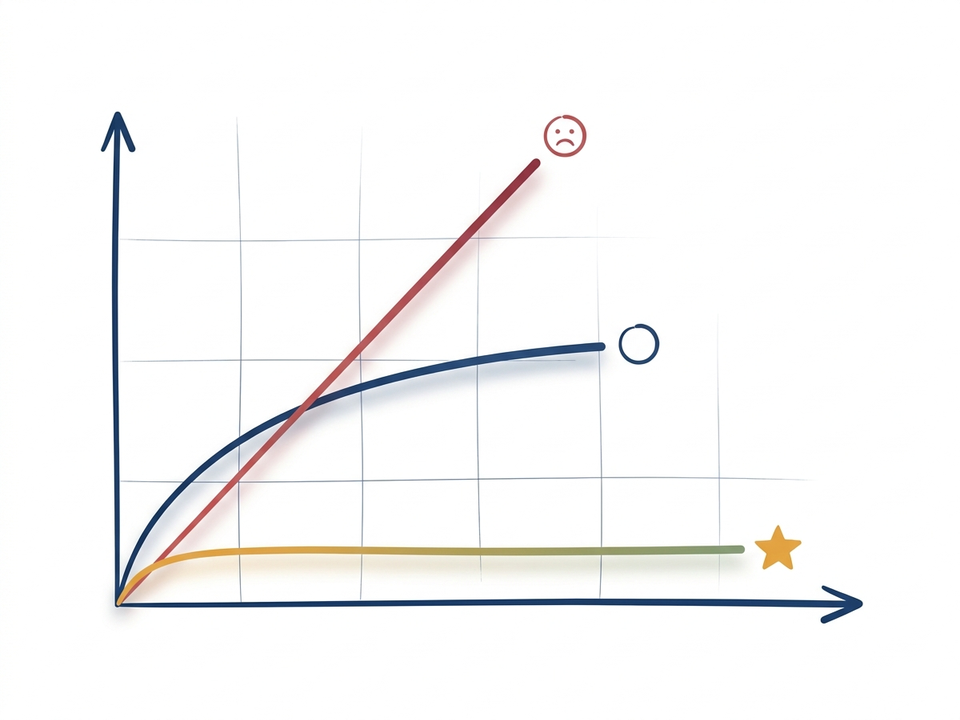
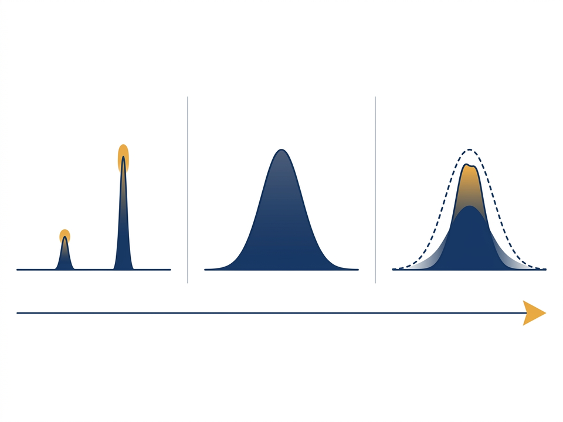
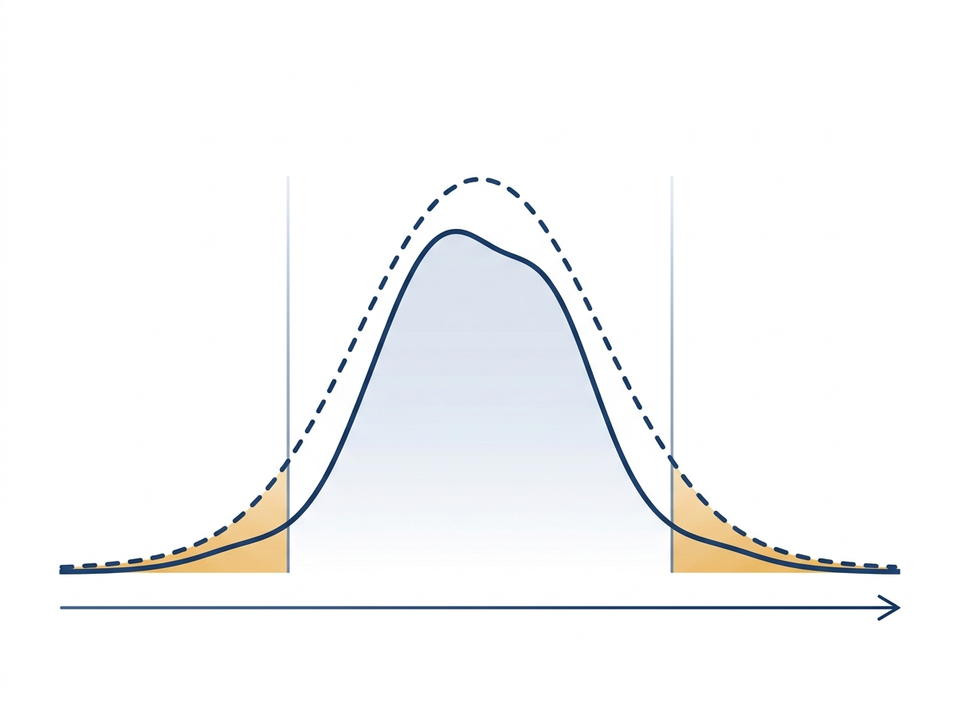
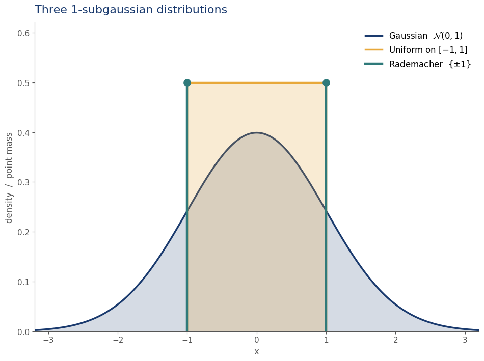

- Part A — The bandit problem & why it matters
- Part B — First algorithms: greedy & ε-greedy
- Part C — Implementation: incremental updates
- Part D — Formalizing the objective: regret
- Part E — Bandit classes: Bernoulli, Gaussian, subgaussian
- Wrap-up & preview of UCB / KL-UCB / Thompson
Lecture material: buntyke.github.io/rlcourse-mtech-fall26
- \( A_t \) — action taken at step \(t\)
- \( R_t \) — reward received at step \(t\) (Sutton & Barto convention; we keep this all semester)
- \( q_*(a) = \mathbb{E}[R_t \mid A_t = a] \) — true mean reward of arm \(a\)
- \( a^* \in \arg\max_a q_*(a) \) — the optimal arm
- \( Q_t(a) \) — our estimate of \(q_*(a)\) at step \(t\)
- \( \Delta_a = q_*(a^*) - q_*(a) \) — suboptimality gap of arm \(a\)
- \( T_a(n) \) — number of times arm \(a\) was pulled in the first \(n\) steps
- \( \mathrm{Reg}(n) \) — cumulative regret over \(n\) rounds (renamed from L&S's \(R_n\) to avoid clashing with reward \(R_t\))
The content of this lecture is based on:
- Chapter 2 of Reinforcement Learning: An Introduction (2nd ed.) by Sutton & Barto
- Chapters 4–5 of Bandit Algorithms by Lattimore & Szepesvári (free at banditalgs.com)
Lecture material: buntyke.github.io/rlcourse-mtech-fall26
Part A — The Problem
- A doctor choosing between two treatments
- A phone showing ad variant A or B
- A gambler at a bank of slot machines
Every choice is a tradeoff between what you know and what you could learn.
- Instructive: tells you the correct action (supervised learning).
- Evaluative: scores only the action you took.
- Evaluative feedback is why exploration exists at all.
- k levers, one pull per round, for n rounds.
- Each lever returns a noisy reward from its own fixed distribution.
- Goal: maximize total reward.
- Name from "one-armed bandit" (slot machine), with k arms instead of one.
- Clinical trials — which treatment?
- Online advertising — which creative?
- Recommender systems — which item?
- Network routing — which path?
- Dynamic pricing — which price?
- Hyperparameter tuning — which config?
Same math underneath.
For \( t = 1, 2, \dots, n \):
- Agent picks action \( A_t \in \{1,\dots,k\} \).
- Environment samples reward \( R_t \sim P_{A_t} \).
- Agent observes \( R_t \).
\( q_*(a) \doteq \mathbb{E}[R_t \mid A_t = a] \)
Action values \(q_*(a)\) are unknown; we keep estimates \(Q_t(a)\).
Part B — First Algorithms
- Exploit: pick the arm with the best current estimate.
- Explore: pick a different arm to improve your estimates.
- Both are needed; any single pull can't do both.
Short-term reward vs. long-term learning.
Estimate the mean of arm \(a\) by averaging observed rewards:
\( Q_t(a) \;\doteq\; \dfrac{\sum_{i=1}^{t-1} R_i \cdot \mathbb{1}\{A_i = a\}}{\sum_{i=1}^{t-1} \mathbb{1}\{A_i = a\}} \)
- By the Law of Large Numbers, \( Q_t(a) \to q_*(a) \) as the count grows.
- Simple and unbiased — our default.
\( A_t \;\doteq\; \operatorname*{arg\,max}_{a}\, Q_t(a) \)
- Always picks the arm that currently looks best.
- Failure mode: one unlucky early sample of the true best arm → never return.
- No exploration at all.
- With probability \(1 - \varepsilon\): greedy.
- With probability \(\varepsilon\): pick a uniform random arm.
- Every arm gets pulled infinitely often → all \(Q_t(a) \to q_*(a)\) a.s.
- Trade-off in the parameter \(\varepsilon\):
- small \(\varepsilon\) → slow learning
- large \(\varepsilon\) → learns fast but under-exploits
Part C — Implementation
- Naively, computing \(Q_n = \frac{1}{n-1}\sum_{i=1}^{n-1} R_i\) needs \(\mathcal{O}(n)\) memory.
- A simple algebraic rewrite gives an online update:
\( Q_{n+1} \;=\; Q_n + \dfrac{1}{n}\bigl[\,R_n - Q_n\,\bigr] \)
\( \text{NewEstimate} \leftarrow \text{OldEstimate} + \alpha \big[\,\text{Target} - \text{OldEstimate}\,\big] \)
- \([\text{Target} - \text{OldEstimate}]\) is an error signal.
- \(\alpha\) is the step size. Here \(\alpha_n = 1/n\) (sample average).
- Constant \(\alpha\) forgets old data — useful when the world is nonstationary (next lecture).
- Same pattern reappears in TD-learning, Q-learning, gradient methods.
Initialize, for a = 1 to k:
Q(a) ← 0
N(a) ← 0
Loop forever:
A ← argmax_a Q(a) with prob 1 - ε
random action with prob ε
R ← bandit(A)
N(A) ← N(A) + 1
Q(A) ← Q(A) + (1/N(A)) [ R - Q(A) ]Ten lines. That's the whole thing.
In ε-greedy with two arms and \( \varepsilon = 0.5 \), what is the probability that the greedy arm is actually selected?
- (a) 0.50
- (b) 0.625
- (c) 0.75
- (d) 1.00
Hint: the random branch still selects the greedy arm sometimes.
After 4 pulls of an arm, \( Q_5 = 2.0 \). The 5th pull returns \(R_5 = 5.0\).
- Compute \(Q_6\) with the sample-average update.
- Compute \(Q_6\) with constant \(\alpha = 0.1\).
- Which reacts faster? When would you prefer each?
Part D — Regret
- Raw reward depends on the scale of each instance — hard to compare.
- Instead, measure how much we lose relative to an oracle who knows the best arm.
\( \mathrm{Reg}(n) \;\doteq\; n\,q_*(a^*) \;-\; \mathbb{E}\!\left[\sum_{t=1}^n R_t\right] \)
where \( a^* \in \arg\max_a q_*(a) \) — the optimal arm.
- \( \mathrm{Reg}(n) \ge 0 \) always.
- \( \mathrm{Reg}(n) = 0 \iff \) always play optimal arm.
- Goal: sublinear regret — \( \mathrm{Reg}(n) / n \to 0 \).
- Means: we play the right arm almost all the time eventually.

- Suboptimality gap: \( \Delta_a \;\doteq\; q_*(a^*) - q_*(a) \).
- Pull count: \( T_a(n) = \sum_{t=1}^{n} \mathbb{1}\{A_t = a\} \).
- Intuition: each pull of a suboptimal arm a costs you \(\Delta_a\) in expectation.
\( \mathrm{Reg}(n) \;=\; \displaystyle\sum_{a \in \mathcal{A}} \Delta_a \; \mathbb{E}\!\left[T_a(n)\right] \)
- Regret = Σ (gap of arm) × (expected pulls of arm).
- The workhorse identity for every stochastic bandit proof.
- Pull arms with large \(\Delta_a\) rarely.
- Pull arms with \(\Delta_a \approx 0\) often — no regret for doing so.
- But \(\Delta_a\) is unknown. We must estimate means and quantify our uncertainty.
Estimation quality depends on the reward distribution — which takes us to bandit classes.
A 3-armed Bernoulli bandit has arm values \(q_*(1) = 0.3\), \(q_*(2) = 0.5\), \(q_*(3) = 0.8\).
Over \( n = 1000 \) rounds, a policy pulls each arm in expectation (400, 350, 250) times.
What is the expected regret \( \mathrm{Reg}(n) \) ?
Part E — Bandit Classes
- An algorithm is only as good as the assumption it makes about rewards.
- Tighter class ⇒ tighter confidence intervals ⇒ lower regret.
- This semester we focus on three classes:
- Bernoulli
- Gaussian
- Subgaussian

- Rewards are binary: \( R_t \in \{0, 1\} \).
- Each arm is a biased coin: \[ \mathbb{P}(R_t = 1 \mid A_t = a) = q_*(a) \in [0, 1] \]
- One number per arm fully describes it.
- Examples: ad click / no click, cure / no cure, win / loss.
- Conjugate Beta prior → Thompson Sampling has a closed form (next lecture).

A centered rv \(X\) (so \(\mathbb{E}[X] = 0\)) is \(\sigma\)-subgaussian if, for every \(\lambda \in \mathbb{R}\),
\( \mathbb{E}[e^{\lambda X}] \;\le\; e^{\lambda^2 \sigma^2 / 2} \)
- Read it as: the "MGF" of \(X\) is bounded by that of \(\mathcal{N}(0, \sigma^2)\).
- Not a specific distribution — a property many distributions share.

Examples of \(\sigma\)-subgaussian rvs (centered):
- \( \mathcal{N}(0, \sigma^2) \) — the canonical case.
- Bounded \( X \in [a, b] \) — \((b-a)/2\)-subgaussian.
- Rademacher \((\pm 1\) each w.p. \(\tfrac12)\) — 1-subgaussian.
Non-example: Exponential rewards — heavy right tail, not subgaussian for any finite \(\sigma\).
Intuition: subgaussian = tails at least as thin as a Gaussian.

- If \(X\) is \(\sigma\)-subgaussian, then \(cX\) is \(|c|\sigma\)-subgaussian.
- If \(X_1, X_2\) are independent and \(\sigma_1, \sigma_2\)-subgaussian: \[ X_1 + X_2 \text{ is } \sqrt{\sigma_1^2 + \sigma_2^2}\text{-subgaussian.} \]
- Consequence for bandits: the sample mean of \(n\) iid \(\sigma\)-subgaussian rewards is \(\dfrac{\sigma}{\sqrt{n}}\)-subgaussian.
This one property is what lets us build the \(\sqrt{\log t / N_t(a)}\) confidence bonus inside UCB — next lecture.
- A centered Bernoulli: \( X = R_t - q_*(a) \in [-q_*(a),\; 1 - q_*(a)] \).
- Range is an interval of width 1 — regardless of \(q_*(a)\).
- Hoeffding's lemma: any zero-mean rv bounded in an interval of width \(b - a\) is \(\tfrac{b - a}{2}\)-subgaussian.
- Therefore centered Bernoulli is always \(\tfrac{1}{2}\)-subgaussian.
- But the bound is loose when \(q_*(a)\) is near 0 or 1 — true variance \(q_*(a)(1 - q_*(a))\) can be much smaller than \(\tfrac{1}{4}\).
Which of the following reward distributions is not \(\sigma\)-subgaussian for any finite \(\sigma\)?
- (a) \( \mathcal{N}(0, 4) \)
- (b) Uniform on \( [-3, 3] \)
- (c) Centered Bernoulli with \( q_*(a) = 0.2 \) (i.e., \( R_t - 0.2 \))
- (d) Exponential with rate 1
Hint: which one has a heavy right tail?
A Bernoulli arm has true mean \( q_*(a) = 0.5 \). It is pulled \( n = 100 \) times.
- (1) What is the variance of a single reward \(R_t\)?
- (2) What is the variance of the sample-mean estimate \(Q_{100}(a)\)?
- (3) By Hoeffding's lemma, what subgaussian parameter does \(Q_{100}(a)\) inherit?
- (4) Repeat (1)–(3) for \( q_*(a) = 0.01 \). What does the mismatch tell you?
- Today: the bandit problem, ε-greedy with sample-average + incremental updates, regret and the decomposition \(\mathrm{Reg}(n) = \sum_a \Delta_a \mathbb{E}[T_a(n)]\), and three bandit classes: Bernoulli, Gaussian, subgaussian.
- Take-away: the class you assume about rewards determines which algorithm you can use — and how tight your regret bound can be.
- Next lecture:
- UCB (subgaussian) — generic, uses closure of σ-subgaussian under averaging.
- KL-UCB (Bernoulli) — tighter when \(q_*(a)\) is near 0 or 1.
- Thompson Sampling (Bernoulli with Beta prior).
- Gradient bandits & contextual bandits.
- Sutton & Barto — RL: An Introduction, Chapter 2.
Free at incompleteideas.net/book/the-book.html - Lattimore & Szepesvári — Bandit Algorithms, Chapters 4–5.
Free at banditalgs.com